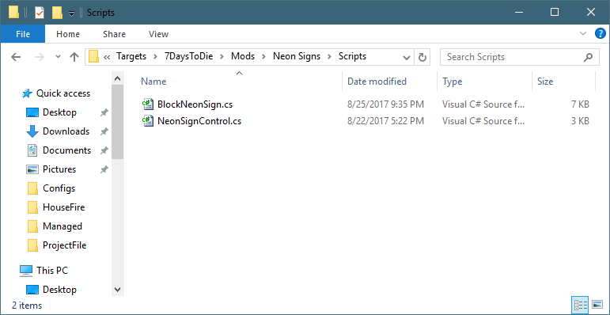
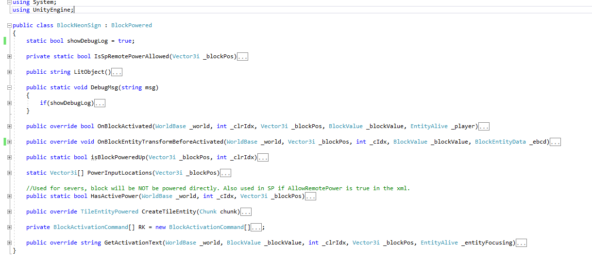
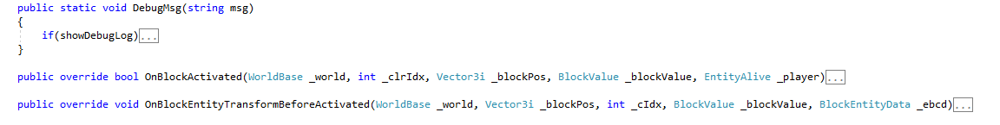
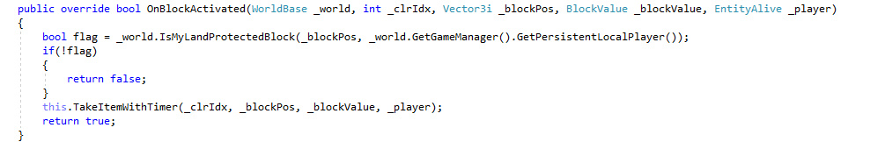
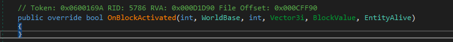
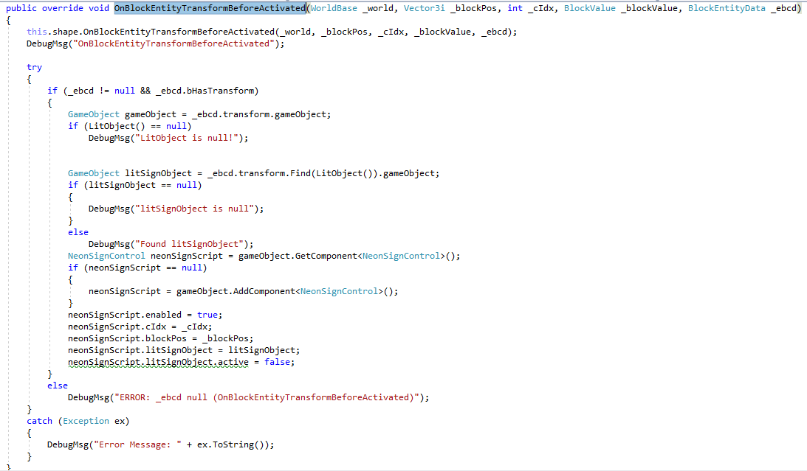
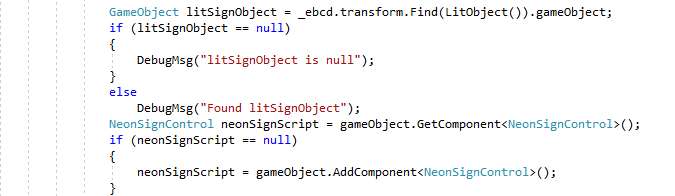
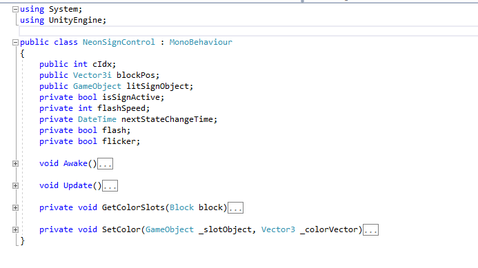
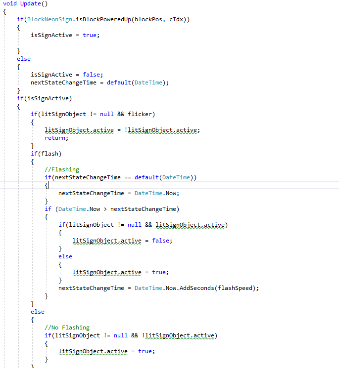

Under the Scripts folder, you'll see you files:
BlockNeonSign.cs and NeonSignControl.cs.

Let's open BlockNeonSign.cs using your favorite text editor. In the example below, we are using Visual Studio, and collapsing all the methods so we just need to see their names.

We are not going to cover all of three08's lines of code, since this isn't a C# Tutorial, but we'll cover the important parts.
using System; using UnityEngine; public class BlockNeonSign : BlockPowered |
The "public class BlockNeonSign : BlockPowered" is the key part we are looking at.
BlockNeonSign is three08's class that he wrote, and is called a derived class.
BlockPowered is the base class, which means it's actual code in in the base game.
Because BlockNeonSign is derived from the BlockPowered class, it has all the abilities of the base class of BlockPowered. By making a derived class, three08 is saying "I want to do everything that the BlockPowered class does, but I want to make changes to some things'.

If you look above, you can see some calls with the keyword "override", such as "OnBlockActivated", and "OnBLockEntityTransformBeforeActivated". That keyword indicates that the base class, BlockPowered, has those functions, and that three08 wants to make changes to those. The methods that do not have override as a keyword, is new functionality that three08 added.
By extending a class, three08 gets all the functionality of an existing class, without copying or duplicating it, and changing the methods that he wants to behave differently.
Three08's OnBlockActivated:

Base Game OnBlockActivated:

So the base class for BlockPowered doesn't do anything when OnBlockActivated is called. However, Three08 wanted to do something. In his method, he makes a quick check to see if the block is within your Land Claim area. If it isn't, then do anything. However, if it is within your land claim block, he let's you pick up the Neon Sign.
That was a simple override example. So why did he choose to override OnBlockActivated? The default BlockPowered was not a block you could pick up once your placed it, however, three08 wanted all the benefits of the powered block, but also wanted the ability to pick it up too.
If he had decided to use a PatchScript to allow his blocks to be picked up, he would have had to make all the BlockPowered blocks have the same feature. With this change, only his powered Neon Lights are able to be picked up.
He over-rides another method too, called "OnBlockEntityTransformBeforeActivated". He wrote more code in this method than the first one, as its more complicated.

In this method, he's doing a few interesting things:
this.shape.OnBlockEntityTransformBeforeActivated(_world, _blockPos, _cIdx, _blockValue, _ebcd); |
His first line in his method call is calling this. He's telling the game that he wants still do everything that base class does. But he wants to do more with it after the base class is done.
Let's take a look at the other interesting thing being done in this method:

He's calling another class, called NeonSignControl. If we look back in the Scripts folder, we'll see the other C# script called NeonSignControl.cs.
Let's take a look at the NeonSignControl.cs

In his class, he's only using a base class of MonoBehaviour. It has a few methods, such as Awake and Update. These method names are special for MonoBehaviour, in that when a game tick occurs, it will call the Update() method calls for each class that is connected to it. In this case, each tick, the Update() call of the NeonSignControl executes.
Let's take a quick look at the Update() method call to see what's it's doing.

The first thing it does is check to see if the NeonLight is currently powered or not. If it's not, don't both doing anything else. However, if it is connected to power, than the light is active.
The next section of the code deals with flashing the neon lights on and off. This allows the Neon Lights to flicker on and off.
Created with the Personal Edition of HelpNDoc: Write EPub books for the iPad